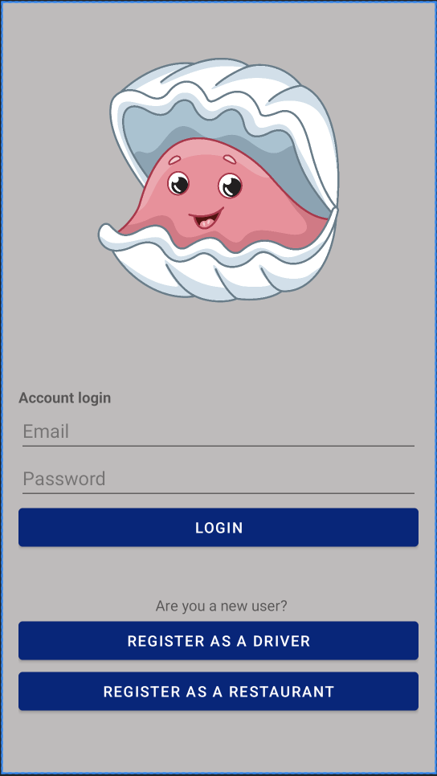
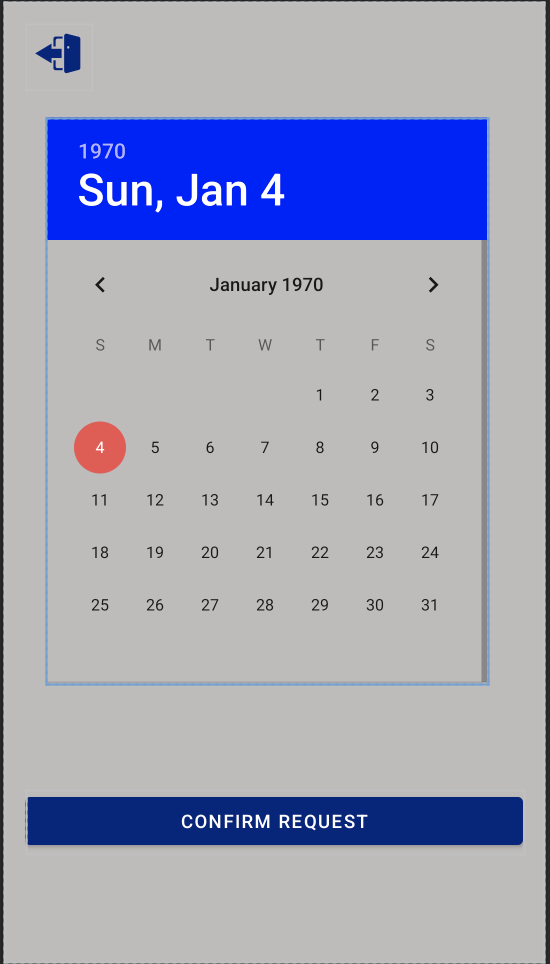

| Oyster Delivery Recovery/td> | |
| link to .apk | |
| External link to source zip | |
| Description: Oyster Delivery Recovery is a two-sided mobile app created with the mission of simplifying oyster recycling for restaurants and drivers in the Maryland area. The app allows restaurants to post their pickup requests to a map and drivers to pick up the oysters and deliver them to the nearest recycling center. The app also allows restaurants and drivers to track their pickup history, which provides a super convenient way to keep logs for environmental and financial purposes. The app was created by a team of 4 students in the University of Maryland's CMSC436 class: Jason Steinberg, Nicholas Casey, Jacob Ramsburg, and Hassam Tariq. | |
|  |  |
| External link to YouTube video | |
| List of external libraries and code used in this project: Firebase Authentication, Firebase Firestore, Google GMS Location | |